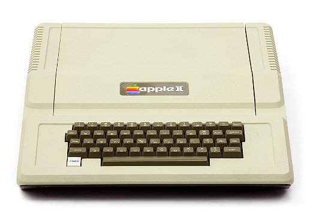

The Apple II is an 8-bit home computer, one of the first highly successful mass-produced microcomputer products, designed primarily by Steve Wozniak (Steve Jobs oversaw the development of the Apple II’s foam-molded plastic case and Rod Holt developed the switching power supply). It was introduced in 1977 at the West Coast Computer Faire by Jobs and was the first consumer product sold by Apple Computer. It is the first model in a series of computers which were produced until Apple IIe production ceased in November 1993. The Apple II marks Apple’s first launch of a personal computer aimed at a consumer market – branded towards American households rather than businessmen or computer hobbyists.
The text and graphics screens have a complex arrangement (the scanlines were not stored in sequential areas of memory) which is reputedly due to Wozniak’s realization that doing it that way would allow for the refresh of the dynamic RAM as a side effect, as described above; it had no cost overhead to have software calculate or look up the address of the required scanline and avoided the need for significant extra hardware. Similarly, in the high-resolution graphics mode, color is determined by pixel position and can thus be implemented in software, saving Wozniak the chips needed to convert bit patterns to colors. This also allows for subpixel font rendering since orange and blue pixels appear half a pixel-width farther to the right on the screen than green and purple pixels. The Apple II at first used data cassette storage like most other microcomputers of the time. In 1978 the company introduced an external 5.25-inch floppy disk drive, the Disk II, attached via a controller card that plugs into one of the computer’s expansion slots (usually slot 6). The Disk II interface, created by Wozniak, is regarded as an engineering masterpiece for its economy of electronic components. The approach taken in the Disk II controller is typical of Wozniak’s designs. With a few small-scale logic chips and a cheap PROM (programmable read-only memory), he created a functional floppy-disk interface at a fraction of the component cost of standard circuit configurations.
During the early development of the Apple II, Apple Inc.'s co-founder, Steve Jobs asked his former boss, Atari’s Al Alcorn for help with the power supply. Alcorn redirected Jobs to Holt, who saw himself as "a second string quarterback" at Atari. He was initially “ skeptical of Jobs and of Apple” (Swaine and Freiberger note that Holt “had trouble understanding the West Coast culture that shaped Apple's Founders” telling Jobs that his rate was $200 per day. Jobs, however, replied that “we can afford you” and Holt joined the Apple II team in part responding to Alcorn's request to “help the kids out.” Holt thus began to work “after hours at Atari on Apple's television interface and power supply.” According to Apple's first CEO, Michael (Scotty) Scott, “One thing Holt has to his credit is that he created the switching power supply that allowed us to do a very lightweight computer compared to everybody else’s that used transformers.” However, one history reports over a dozen computer systems with a switching power supply came out in years prior to the Apple II, including the PDP-11/20 minicomputer in 1969, the IBM 5100 portable computer in 1975, and the decsystem 20 in 1976. Holt later joined Apple full-time as Apple Employee #5.